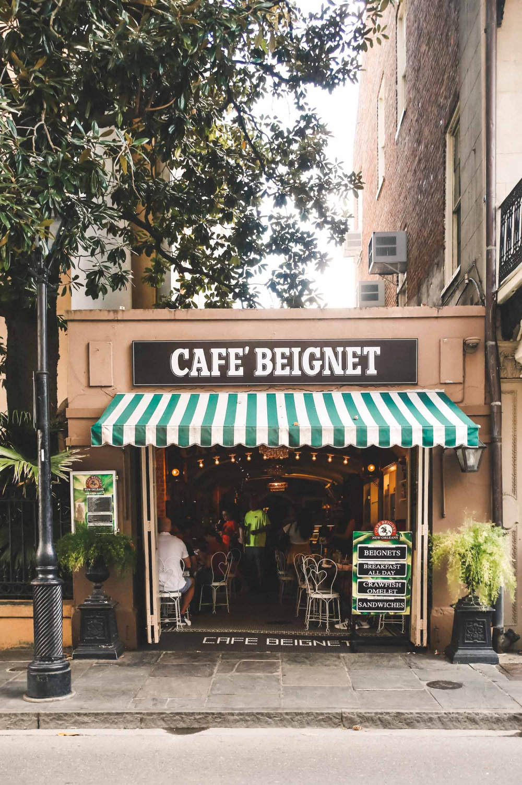

Belgium, Europe
I would love to go to Belgium, Europe to see where my great grandfather emmigrate from and to see the culture from his side of the family and maybe even try some traditional Belgian food.
I would love to see the culture and the beauty of Belgium and learn all about its rich and vast history and I would love to take home some souvenirs and pictures.
New Orleans

I would love to go to New Orleans to see the place where my all time favorite movie isset in and learn about the culture and mardigra parade.
I would love to see try the many different desserts (like beignets) and foods made in New Orleans, learn all about its vast history, and I would love to take home some souvenirs and pictures.
Japan
I would love to go to Japan to see allthe different anime stores they have and the many anime theme parks that they have and maybe even go to a comic con in Japan.
I would love to see the culture and explore the many different beauties of Japan like their cherry blossoms, temples, kimonos, and foods.